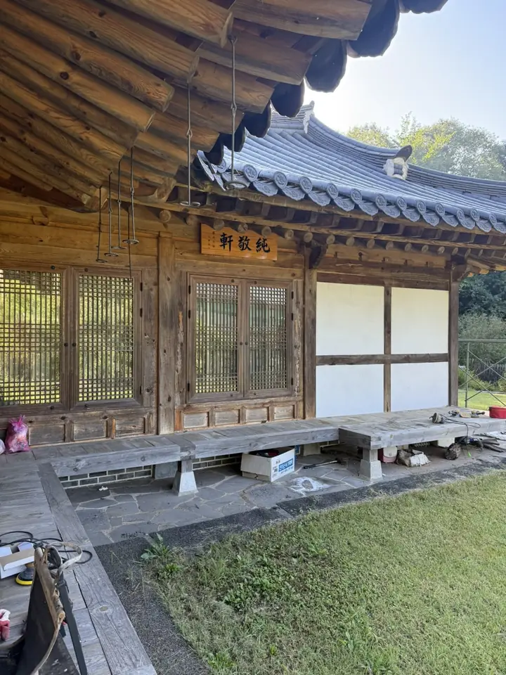
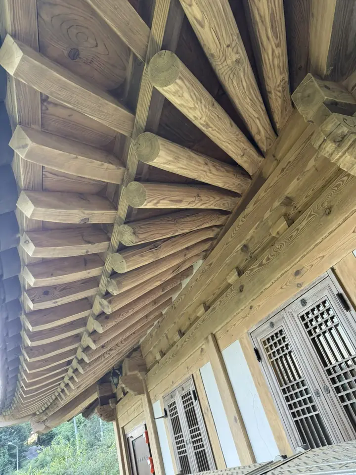
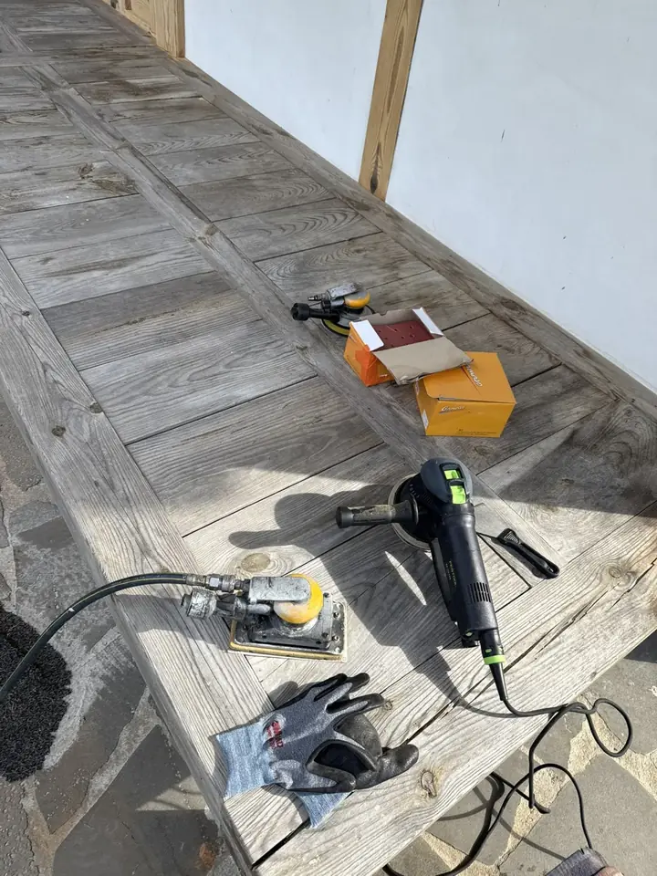
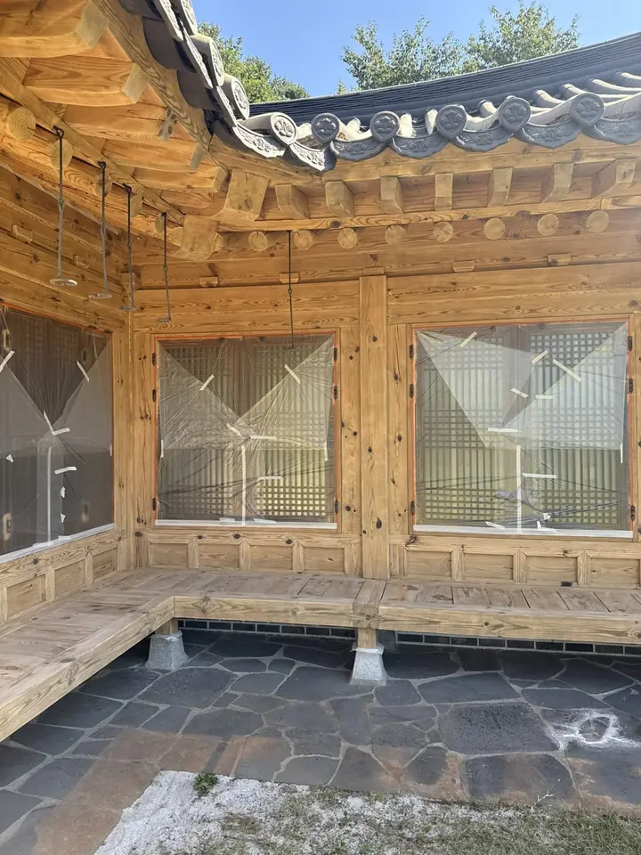
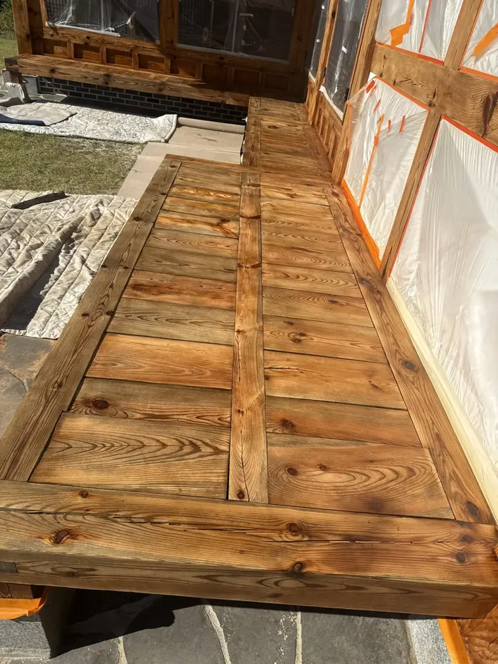
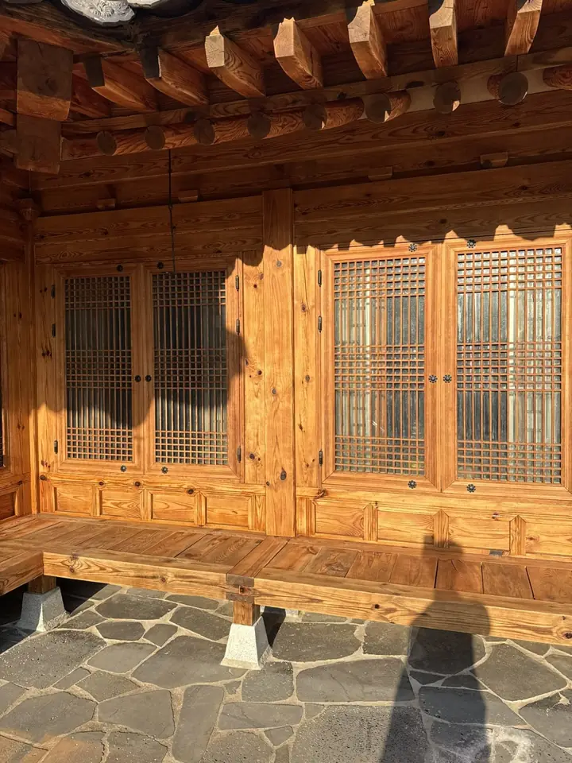

가평 서대마을 한옥 툇마루 샌딩 작업, 널과 기둥과 서까래
툇마루 널이 회색으로 바래 있었고 그 위 처마에는 서까래가 줄지어 있었습니다. 마루 널만 갈아서 끝나지 않아 기둥과 서까래까지 같이 샌딩하고 스테인을 입혔습니다.
회색으로 바랜 툇마루였습니다
처마 아래로 이어진 툇마루 널이 회색으로 바래 있었습니다. 보양한 흰 벽 위로 서까래가 줄지어 있었고 바닥 돌 위에는 보양 깔개를 놓았습니다.
마루만 할지 처마까지 할지는 현장을 보고 정합니다
이번 현장은 마루 널과 기둥, 서까래까지 갈고 스테인을 올렸습니다. 샌딩만 할지 스테인까지 할지도 현장을 보고 정합니다.
흰 벽과 창은 비닐로 덮었습니다
서까래 작업은 흰 벽과 창에 오일이 튀기 쉬워 비닐 보양을 먼저 했습니다. 보양을 걷고 나니 바랜 툇마루가 진한 색으로 바뀌어 있었습니다.
이 현장의 작업
- 현장: 가평 서대마을 한옥 툇마루
- 작업: 툇마루 널과 기둥, 처마 서까래 샌딩 후 스테인 도장
- 순서: 샌딩, 비닐 보양, 서까래 스테인, 툇마루 스테인
- 작업일: 2026년 10월
PHOTO
가평 한옥 툇마루 샌딩 현장 사진






FAQ
가평 한옥 툇마루 샌딩, 자주 묻는 질문
마루만 따로 할 수도 있나요?
현장 상태를 보고 말씀드립니다. 처마와 기둥까지 같이 하는 경우가 많습니다.
샌딩만 하고 끝낼 수도 있나요?
샌딩만 할지 스테인까지 할지는 현장을 보고 정합니다.
 가평 서대마을 한옥 마루 연마 후 오일스테인, 짙게 변한 마루
가평 서대마을 한옥 마루 연마 후 오일스테인, 짙게 변한 마루